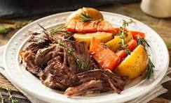

Pot Roast
This recipe is a family favorate! We love it. It comes with all the right ingredients and is easy to make
Make this recipe in only 1 hour!

Ingredients
- Chuck roast: A four-pound chuck roast should make about eight servings.
- Seasonings: This slow cooker pot roast recipe is simply seasoned with salt and pepper.
- Olive oil: Use olive oil to sear the chuck roast to brown on each side.
- Soup mix: A package of dry onion soup mix adds tons of flavor.
- Water: A cup of water keeps the slow cooker pot roast from drying out.
- Vegetables: Carrots, potatoes, onions, and celery add substance and make it a meal.
Instructions
- Season and sear the chuck roast.
- Place the ingredients in the slow cooker.
- Cook on Low for 8 to 10 hours.
home